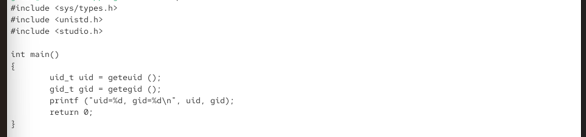
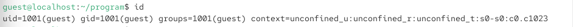
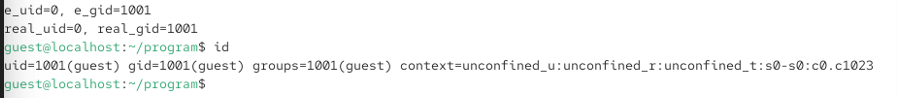
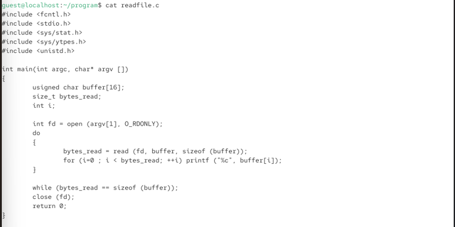
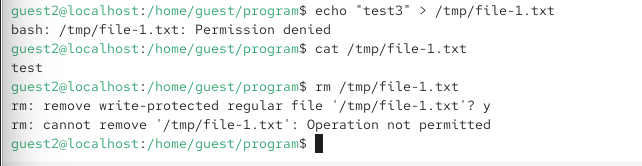
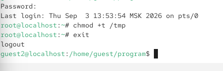

7.октябрь.2026
Дискреционное разграничение прав в Linux. SetUID-, SetGID- и Sticky-биты
Действие: Проверить наличие компилятора gcc и отключить SELinux.

Рис. 2 — gcc -v выводит версию компилятора (если установлен).
Содержимое simpleid.c:


Рис. 3,4 — uid=1001, gid=1001
Выполнить системную команду id и сравнить результаты.

Рис. 5 — Сравнение: Вывод simpleid совпадает с эффективными идентификаторами из id.
Добавить вывод действительных и эффективных идентификаторов. Содержимое simpleid2.c:

Рис. 6 — ()
Рис. 3 — При обычном запуске действительные и эффективные идентификаторы совпадают.
Компиляция и запуск:
gcc simpleid2.c -o simpleid2 ./simpleid2
Результат:
e_uid=1001, e_gid=1001 real_uid=1001, real_gid=1001
Действие: От имени суперпользователя сменить владельца файла simpleid2 на root и установить SetUID-бит.

Рис. 7 - Бит s в правах владельца означает SetUID.
Запустить simpleid2 и id от имени guest.

Рис. 8 — При запуске simpleid2 эффективный UID стал 0 (root), так как установлен SetUID-бит и владелец файла — root. Это позволяет программе выполняться с правами суперпользователя.
Действие: Создать программу для чтения файла. Содержимое readfile.c:

Рис. 9
Действие: Сменить владельца файла readfile.c на root и установить права, запрещающие чтение для guest.

Рис. 10
Действие: Сменить владельца программы readfile на root и установить SetUID-бит.
Рис.
7
Попробовать прочитать readfile.c с помощью readfile.
Рис. 10 —
Программа readfile имеет SetUID-бит и владельца root, поэтому
выполняется с правами root и может читать файл, недоступный для
guest.
Выяснить, установлен ли Sticky-бит на /tmp.
Рис. 10 -
Бит t в правах означает Sticky-бит.
От имени guest создать файл file01.txt со словом test.
Рис.
10
От имени guest2 прочитать файл.
 Рис. 11 -
Чтение разрешено, так как права o+r установлены.
Рис. 11 -
Чтение разрешено, так как права o+r установлены.
Попробовать дозаписать слово test2.
Рис. 11 -
Дозапись разрешена, так как права o+w установлены
Действие: Попробовать перезаписать файл словом test3.

Рис. 12 - Sticky-бит на /tmp запрещает удаление файлов, владельцем которых не является текущий пользователь. guest2 не владелец файла, поэтому удаление запрещено.Действие: От имени суперпользователя снять Sticky-бит с /tmp.  Рис. 13 - Бит t
отсутствует.
Рис. 13 - Бит t
отсутствует.
Действие: От имени guest2 попробовать удалить файл.
 Рис. 14 -
Без Sticky-бита любой пользователь с правами на запись в директорию
может удалять файлы, даже если он не является их владельцем.
Рис. 14 -
Без Sticky-бита любой пользователь с правами на запись в директорию
может удалять файлы, даже если он не является их владельцем.
Действие: Вернуть Sticky-бит на /tmp.

Рис. 15 - Sticky-бит восстановлен.□ Титульный лист
□ Цель работы
□ Описание процесса выполнения с командами и снимками экрана
□ Листинги программ (simpleid.c, simpleid2.c, readfile.c)
□ Наблюдения по SetUID-, SetGID- и Sticky-битам
□ Выводы, согласованные с целью работы
В ходе лабораторной работы я:
получены практические навыки работы с SetUID-, SetGID- и Sticky-битами, изучены механизмы смены идентификаторов процессов.
simpleid.c
c
#include <sys/types.h>
#include <unistd.h>
#include <stdio.h>
int main() {
uid\_t uid = geteuid();
gid\_t gid = getegid();
printf("uid=%d, gid=%d\\n", uid, gid);
return 0;}
simpleid2.c
c
#include <sys/types.h>
#include <unistd.h>
#include <stdio.h>
int main() {
uid\_t real\_uid = getuid();
uid\_t e\_uid = geteuid();
gid\_t real\_gid = getgid();
gid\_t e\_gid = getegid();
printf("e\_uid=%d, e\_gid=%d\\n", e\_uid, e\_gid);
printf("real\_uid=%d, real\_gid=%d\\n", real\_uid, real\_gid);
return 0;}
readfile.c
c
#include <fcntl.h>
#include <stdio.h>
#include <sys/stat.h>
#include <sys/types.h>
#include <unistd.h>
int main(int argc, char* argv[]) {
unsigned char buffer[16];
size_t bytes_read;
int i;
int fd = open(argv\[1], O\_RDONLY);
do {
bytes\_read = read(fd, buffer, sizeof(buffer));
for (i = 0; i < bytes\_read; ++i)
printf("%c", buffer\[i]);
} while (bytes\_read == sizeof(buffer));
close(fd);
return 0;}